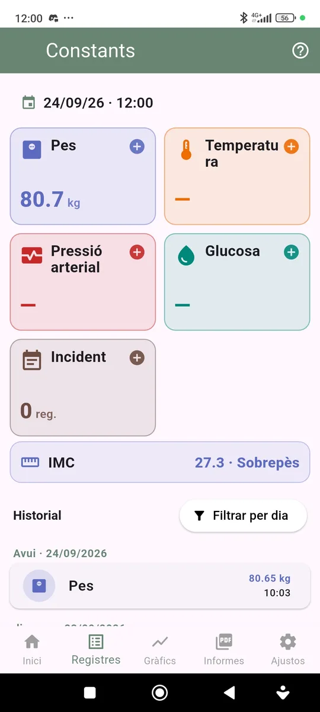
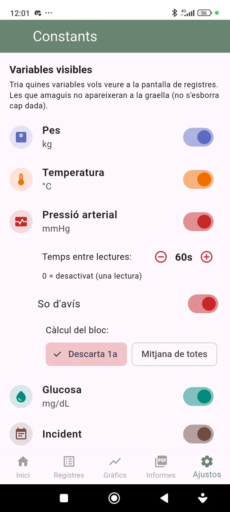
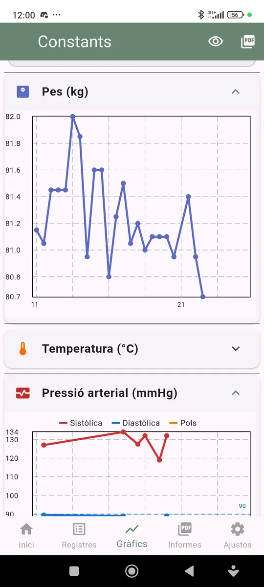
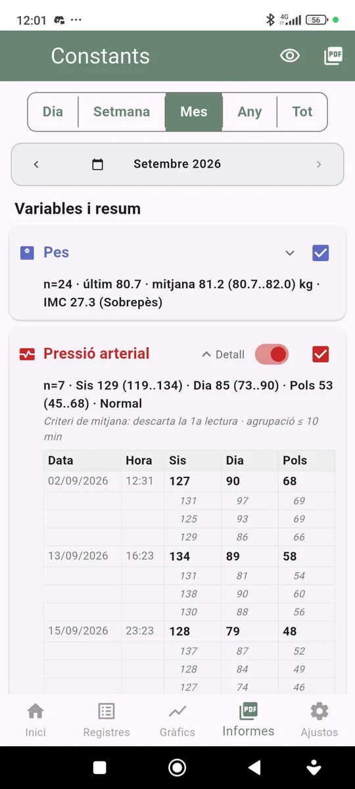

Mòdul Constants
Manual de Constants
Guia pràctica per registrar pes, temperatura, pressió arterial i glucosa, i revisar-ne l’evolució.

Què permet registrar?
Com fer un registre
1. Prem la targeta de la mesura
Cada mesura té la seva targeta. Prem la targeta (o el signe +) per obrir la fitxa d’entrada. Els botons − i + ajusten el valor, i també el pots escriure directament.
A la part superior hi ha la data i l’hora del registre. Pots canviar-les per afegir mesures passades; un segon toc torna a l’hora actual.
2. Pressió arterial: bloc de lectures
La pressió arterial es pot registrar com un bloc de diverses lectures (per defecte, 3), amb un temps d’espera entre lectures i un so d’avís quan toca fer la següent. Cada lectura recull sistòlica, diastòlica i pols.
Si surts a mitja presa, l’app t’ofereix continuar el bloc.
3. Historial
A sota de les targetes hi ha l’historial, agrupat per dies. Prem un registre per modificar-lo o eliminar-lo. Amb Filtrar per dia pots veure només els registres d’un dia concret.
Configuració

Variables visibles i pressió arterial
A Ajustos pots escollir quines variables apareixen a la pantalla de registres. Amagar una variable no esborra cap dada.
Per a la pressió arterial pots definir el temps entre lectures (0 = una sola lectura), activar o desactivar el so d’avís i triar el càlcul del bloc: descartar la 1a lectura o mitjana de totes.
Gràfics

Evolució de cada variable
Cada variable té el seu gràfic, que pots plegar o desplegar. La pressió arterial mostra alhora sistòlica, diastòlica i pols. Pots triar el període i, amb les icones de la capçalera, veure la vista prèvia o exportar els gràfics en PDF.
Informes

Resum per període
Tria el període (dia, setmana, mes, any o tot) i navega amb les fletxes. Per a cada variable es mostra un resum: nombre de registres, darrer valor, mitjana i rang.
Marca amb la casella les variables que vols incloure al PDF. A la pressió arterial, l’interruptor Detall mostra totes les lectures de cada bloc.